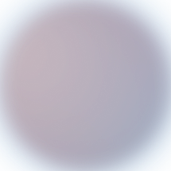
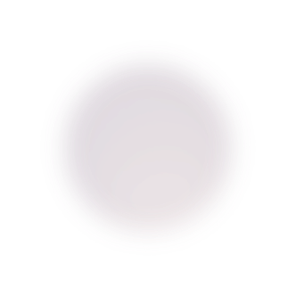

Кейси Палюх Яни
Реклама, яку можна порахувати
Тут не про “було красиво”. Кожен кейс я дивлюся через бюджет, якість заявки, шлях клієнта і те, що бізнес отримав після запуску.
Результати
3 проєкти, де реклама стала бізнес-інструментом
Локальний бізнес
Грузинська пекарня
- Бюджет
- $150
- Охоплення
- 78 176
- Переходи
- 1 988
- Ціна кліку
- $0.09
E-commerce
Магазин одягу
- Заявки
- 312
- ROAS
- 6.4x
- Термін
- 21 день
- Гіпотези
- 12
Послуги
Манікюрний салон
- Записи
- 146
- CPA
- $1.8
- Повторні
- 32%
- Період
- 30 днів
Як я читаю кейс
Результат важливий тільки тоді, коли зрозуміло, чому він стався
Я не оцінюю рекламу окремо від бізнесу. Якщо ліди дешеві, але менеджер не закриває заявки, це не перемога. Якщо охоплення велике, але немає продажів, це просто шум.
Перевіряю офер і шлях клієнта до заявки.
Дивлюся, які креативи створюють дію, а не просто увагу.
Порівнюю бюджет, якість лідів і економіку продажу.
Залишаю тільки те, що можна масштабувати без хаосу.
Висновок
Кейс має відповідати на питання: що робимо далі?
Після запуску ви отримуєте не просто цифри, а рішення: що підсилити, що вимкнути, який бюджет переносити і яку гіпотезу тестувати наступною.
Свій результат